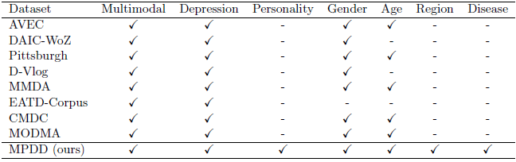

As compared to the existing datasets, the MPDD dataset significantly enhances the breadth of contextual diversity and the depth of annotation comprehensiveness, as underscored in Table 1. By offering a more inclusive and granular depiction of depression, the MPDD dataset is poised to facilitate the evolution of sophisticated multimodal models. These models are better equipped to navigate the intricacies of mental health conditions, particularly depression. The dataset’s thorough annotation scheme is instrumental in discerning individual differences. This capability is essential for fostering timely interventions and conducting precise assessments of depression, thereby contributing to the broader objective of improved mental health management.

Track 1: MPDD-Elderly Dataset: The MPDD-Elderly dataset is a comprehensive resource tailored for the detection and analysis of depression among the elderly population. Comprising data from 118 elderly participants, this dataset is designed to support a variety of classification and regression tasks related to depression identification. The annotations within the MPDD-Elderly dataset are meticulously crafted to capture a broad spectrum of factors influencing depression in the elderly. They are grounded in the PHQ-9 Scale Scores, which offer a reliable quantitative measure of depressive symptoms, allowing for standardized assessment across the participant cohort. Personality traits are evaluated using the BigFive-10 scale, providing insights into the individual differences that may contribute to the manifestation of depression. The dataset also incorporates comprehensive demographic information, encompassing age, disease, family situation, and economic status, which paints a detailed picture of each participant’s background and potential stressors. Furthermore, disease labels are included to account for various health conditions, such as those related to the endocrine, circulatory system, and nervous system, recognizing the impact of physical health on mental health. This multifaceted approach to annotation ensures a nuanced understanding of depression in the elderly, facilitating the development of more precise and personalized assessment tools.
The subdataset is structured to support both 3 types of classification tasks:
The subdataset is structured to support both 3 types of classification tasks:
- Binary classification: normal / depressed
- Ternary classification: normal / mildly depressed / severely depressed
- Quinary classification: normal / mildly depressed / moderately depressed / moderately severe / severe
Track 2: MPDD-Young Dataset: The MPDD-Young dataset is designed to advance the field of multimodal depression detection, particularly four Young Adult Depression Detection. Comprising data from 110 young adults, this dataset offers a comprehensive view of depressive symptoms through various modalities and tasks. The annotations within the MPDD-Young dataset are multifaceted, providing a rich set of data for analysis. They are based on the PHQ-9 Scale Scores, which offer a quantitative measure of depressive symptoms, allowing for a standardized assessment of depression severity. Additionally, personality traits are evaluated using the BigFive-10 scale, which helps in understanding the individual differences that may influence the manifestation of depression. The dataset also includes demographic information such as gender, age, and birth region. This comprehensive profile of the participants enables a more nuanced analysis of depression, taking into account the diverse backgrounds and personal characteristics of the individuals involved.
The dataset is structured to support both 3 types of classification tasks:
The dataset is structured to support both 3 types of classification tasks:
- Binary classification: normal / depressed
- Ternary classification: normal / mildly depressed / severely depressed
For both tracks, the data set is divided into a training set, a validation set, and a test set. 80% of the data set is used for training and validation, while the remaining 20% is used for testing.